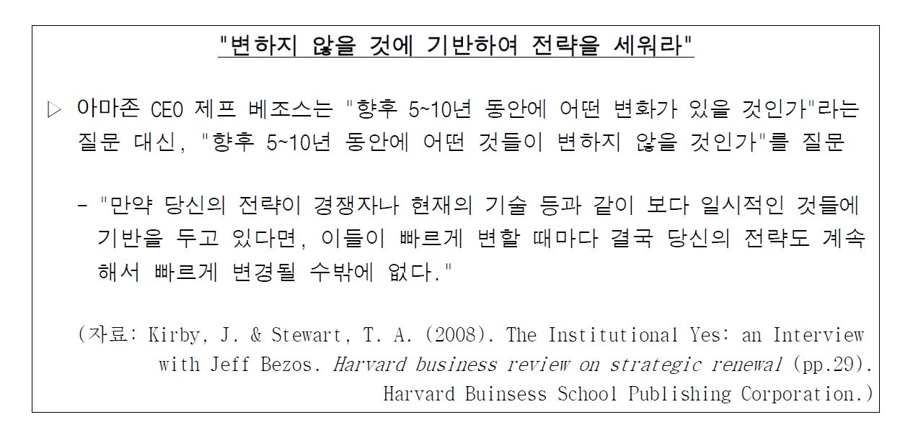
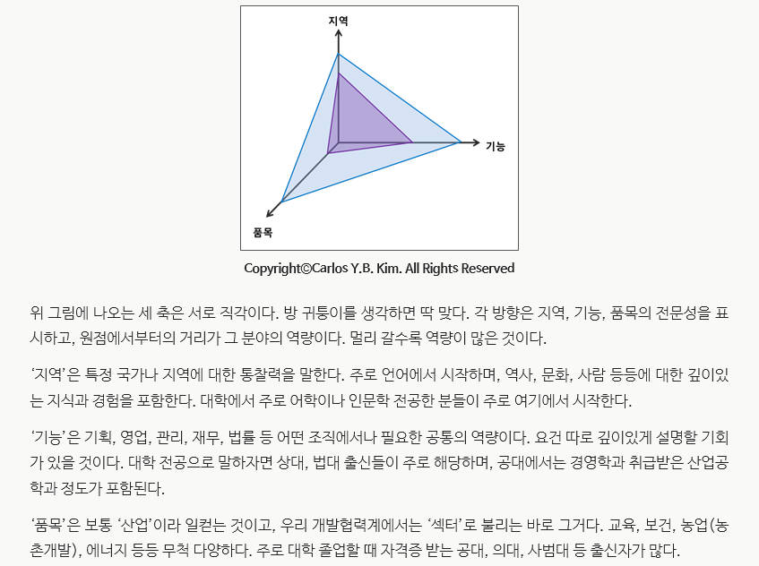

Pilot Chart for Ultimate me
2011년 4월 6일 수요일
저장
⎘ 주소 복사
Pilot Chart for Ultimate me
Vision (어떤 사람으로 죽고 싶은가) - 한 분야의 궁극, 명장.
VC가, MAKER가 된다. 죽기전에 세 가지 영역에서 세 가지 혁신을 일으킨다.
시간과 공간 그리고 관계(연결). 세상을 바꾸는게 아니라, 사람들이 세상을 인식하는 방식을 혁신한다.
- 서울에 내집 마련 및 결혼 : 2억 5천
- 사내에서 기술적 이해도가 가장 높은 Junior Marketer
-
회사 돈으로 MBA 가기
- 토플iBT 110 / GMAT
- Human Network Building - 목적과 방향성 수립 / 모임을 만들고 총무가 된다
- 주말 스터디 조직만들기(서울)
- 사내 혁신사례 3개 창출 (2012년)
- 대학생 수준의 소비를 유지 / 2억 모으기
- Hipo / Expert
- 팀과 모임을 만들고 이끈다. ex)책 쓰는 모임
2014년 목표
- 사내 Expert 목표 설정 - 사내 특정분야에서는 사장보다 많이 알아야 한다. positioning spot 설정
- 사외 세미나 및 교육 신청
- 사내 혁신사례 2가지 이상 창출
사내 특정분야 전문가로 포지셔닝 - 기획자 BM
- 내 업무에 대한 글로벌 스탠더드 파악
- 다양성을 인정하고 이해하기
- 국내외 정세와 트렌드에 대해 끊임 없이 스터디
- 회사의 진행 중/진행 예정 글로벌 프로젝트 이해
장기 목표 (5년)
중기 목표 (3년)
내 경쟁자들은 구글, 애플의 천재들.
내 경쟁자는 뉴욕에 있다.
궁국의 나에 대한 호기심
Journey to ultima Thule,
Curious about ultimate me
나만이 살아낼 수 있는 최고의 나.
목표설정
Big Hairy Audacious Goal
Moonshot,
insanity is doing the same thing over and over again but expecting different results
OLD WAYS won't OPEN NEW DOORS
specific : 구체적으로 명확하게
measurable : 측정가능하도록
action - oriented : 행동중심적으로
realistic : 현실적으로
timely : 시간의 제약
Specific: 구체적이고
Measurable: 측정 가능하며
Attainable/Action-oriented: 달성 가능한 수준의 / 행중심적으로
Realistic: 현실적인 목표를
Time based: 시간 제한을 두고 설정하라
Collaborative: 한 팀이 되어 협력적으로 일할 수 있도록 구성원을 독려하는
Limited: 범위와 기한을 한정한
Emotional: 구성원들의 에너지와 열정을 모을 수 있도록 정서적으로 연결된
Appreciable: 보다 빠르고 쉽게 달성할 수 있도록 큰 목표를 작은 목표로 쪼개어
Refinable: 확고부동하되, 상황 변동에 따라 적절히 수정할 수 있는 권한을 명시한
'GOSPA 모델'
목적(Goal) - 장기적으로 성취하고픈 구체적이고 측정가능하며 시간제한이 있는 결과.
목표(Objectives) - 목적에 도달하기 위해 달성해야 할 중간 단계. 계단
전략(Strategies) - 각각의 목표를 성취할 다양한 방법들. 판매량 달성 등
우선순위(Priorities) - 목적/목표 달성을 위해 상대적으로 중요한 활동들. 파레토 법칙
행동(Action) - 전략 실행, 목표 달성, 목적 성취를 위해 취해야 할 구체적이고 측정가능하며 시간제한이 있는 활동
내 행복은
뭔가를 극한으로 만들어 내는거야.
내 성공은
그것으로 세상을 바꾸는 것
돈은 성공을 재는 정량적 지표일 뿐
어디에 살고 싶은가?

매 분기 스포츠1개 악기/음악 1개장르 마스터
ㅇ 전략 설정에 앞서 해야 할 질문
무엇이 변화하고 있는가?
그리고 오래도록 변하지 않을 것은 무엇인가?
-> 변하지 않을 영역에서 핵심 경쟁력을 세우고
과거와 달라진 것에서 기회를 찾아라.
지금은 할 수 있는 것이 반드시 있을 것이다.
아바타의 제임스 캐메론 감독이 기술적 진보를 기다렸듯이
http://ppss.kr/archives/38711
